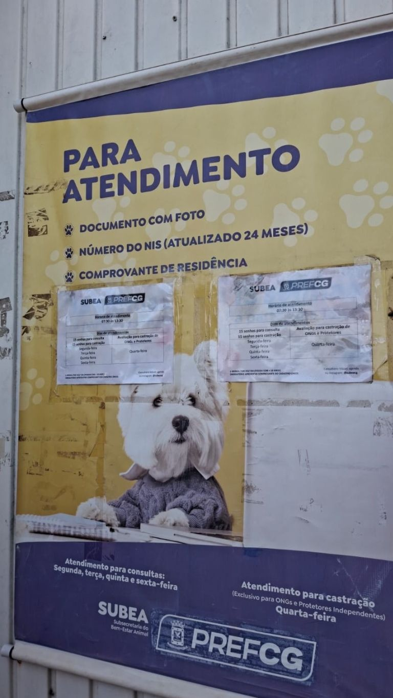

EsperaLar

A Lei Federal n° 9.605/1998 criminaliza os maus tratos aos animais, prevendo sanções penais e administrativas que variam de três meses à um ano de detenção, além de uma multa. Essa lei vale não só para os animais domésticos, mas também para a fauna silvestre, inclusive tendo a pena aumentada caso o crime seja praticado contra esses espécimes. E com a Lei de número 14.064/2020, as penas foram endurecidas ainda mais para proteger os bichos. Regionalmente, existe a Lei N° 5.673 de 8 de junho de 2021, que protege a fauna do Mato Grosso do Sul, bem como os animais domésticos.
Nós da equipe de reportagem fizemos uma visita na sede da Subea, onde falamos com o médico veterinário superintendente da instituição Edvaldo Sales. O órgão nasceu como uma subsecretaria na prefeitura, e somente em 2025 se tornou uma superintendência. A função do órgão é implantar no município de Campo Grande políticas públicas para o bem-estar animal, e mantém a linha de atendimento até hoje.

A Subea atua com controle populacional, por meio de castrações, além de ter atendimento à pessoas de baixa renda por meio do cadastro único, e suporte à Organizações Não Governamentais (ONGs) e protetores independentes que abrigam animais em suas casas. Hoje a instituição tem cadastrados 216 pessoas físicas, como protetores independentes, e 10 ONGs, que, de acordo com Sales, recebem atenção exclusiva com um percentual maior de castrações, vacinas virais e suporte nutricional, com doações de ração, que acontecem por meio de sorteios para dois protetores por mês.

Embora o número de animais abandonados pelas ruas ainda seja alto, o órgão não possui abrigos ou lugares de acolhimento para animais abandonados. “Nosso ponto de vista enquanto município vai muito contra o abrigo municipal, contra o espaço específico que recebe os animais. Dentro do nosso estudo, a partir do momento que você cria um ponto de recolhimento de animais, você está incentivando, você está ampliando”, explica Edvaldo Sales. Ele conta ainda que quando se adota um animal, a responsabilidade de castrar, vacinar e cuidar é do tutor, a prefeitura funciona apenas como uma forma de conseguir esses cuidados.
Sales conta ainda que a Subea possui parceria com o hospital veterinário da UFMS. Tanto ONGs, protetores e cidadãos que levem animais que precisem de uma internação ou uma cirurgia de urgência serão atendidos pela instituição e encaminhados para o hospital caso exista a necessidade. E ainda, animais de ruas que forem levados à eles podem ser indicados à uma das 10 clínicas veterinárias cadastradas, para que o animal receba castração e outros cuidados, ficando mais fácil que o bichinho encontre um lar.

De acordo com o superintendente, nos dias reservados para ONGs, a instituição atende entre 180 à 200 animais somente para a castração, e contabilizando todas as castrações, são 1.700 por mês. Dados repassados pela Subea mostram que de janeiro à abril de 2026, foram registrados 6.271 atendimentos à animais, sendo 4.888 apenas castrações, e 608 desses foram feitos por meio do ônibus móvel.
Já o ônibus móvel da Subea atua de acordo com a necessidade levantada pela população, que entra em contato por meio de associações de moradores, líderes comunitários e CRAS. Em Campo Grande, o número de animais equivale à quase um terço da população humana, Sales comenta que embora a unidade móvel não seja suficiente para contemplar todos os animais, ela é um avanço nas políticas públicas.
Acontece mensalmente no segundo domingo do mês, na praça da Bolívia, a feira de adoção promovida pela Subea, com a presença de médicos veterinários, gaiolas, cercados e outros instrumentos necessários. Os animais que estão disponíveis são de ONGs e cidadãos que entram em contato na intenção de doar. Em Campo Grande existe também a opção de se adotar um bichinho visitando algum dos abrigos espalhados pelas diferentes regiões da cidade. Veja abaixo no infográfico o endereço de alguns desses abrigos para encontrar seu novo melhor amigo: